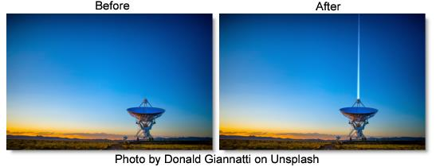

S_LaserBeam
Description
Simulates the beam from a science fiction style laser blaster.
The S_LaserBeam filter comes from the Emmy award winning Boris FX Sapphire filter set.
Category
Render.
Controls
Presets
To select a preset, pick one from the Presets window.
Time
The effect is advanced in time.
Start
Start of the beam.
Stop
End of the beam.
Shift X & Y
Moves the Start and Stop points shifting the whole beam to a different location.
Position
Where the drawn beam segment should appear along the beam trajectory. At values between 0 and 1, the beam segment will appear along the beam trajectory.
Note: Nothing will be drawn at Position values of 0 or 1.
Length
Length of the drawn beam segment.
Width
Width of the drawn beam segment.
Core Color
Color at the center of the beam.
Edge Color
Color at the edge of the beam.
Color Balance
Adjusts the balance between the core and edge colors.
Brightness
Brightness of the beam.
Softness
Softness of the texturing in the beam.
Fade Back
Fades out the brightness of the back half of the beam. Setting this to 1 will fade to black at the very back of the beam. Higher values will fade out more quickly.
Fade Front
Fades out the brightness of the front half of the beam. Setting this to 1 will fade to black at the very front of the beam. Higher values will fade out more quickly.
Laser Shape
The shape of the drawn segment of the beam.
Smooth
The segment is drawn with a circular profile.
Spear
The segment is drawn as a symmetrical shape with sharpened ends.
Forward
The segment is drawn as an asymmetrical shape with the leading end wider than the trailing end.
Backward
The segment is drawn as an asymmetrical shape with the trailing end wider than the leading end.
Perspective
The strength of the perspective effect. At 0, there is no effect. Positive values move the bolt nearer to the target than it otherwise would be at a given beam position, while negative values move it nearer to the source.
Breakup
As this increases, the drawn beam segment become more and more ragged.
Smooth
Overall smoothing applied to the beam segment.
Atmosphere
Atmosphere Amp
Atmosphere gives the effect of the laser shining through a dusty atmosphere and picking up light or getting shadowed. This parameter adjusts the amount, or amplitude of the atmospheric effect. 0 gives a smooth beam while higher values give a more dusty look.
Atmosphere Freq
Controls the spatial frequency of the atmospheric noise. Turn this up higher to get finer details or turn down for broader overall variation.
Atmosphere Detail
Controls the amount of fine detail in the atmosphere simulation. Decrease to get smoother atmosphere or increase for a more crunchy, grainy look.
Atmosphere Seed
Used to initialize the random number generator for the atmospheric noise. The actual seed value is not significant, but different seeds produce different results and the same value should give a repeatable result.
Combine
Determines how the beam image is combined with the background.
Screen
Blends the beam with the image which can help prevent overly bright results.
Add
Add the beam image to the image.
Beam Only
Shows the beam over a transparent black background.
Show Start
Enables/disables the on-screen control for adjusting the Start parameter.
Show Stop
Enables/disables the on-screen control for adjusting the Stop parameter.
Show Shift
Enables/disables the on-screen control for adjusting the Shift parameter.